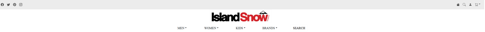

Styling With Ease
04 Oct 2023Bootstrap Experience

To be completely honest, Bootstrap is a game changer for me. Bootstrap is a Cascading Style Sheet Framework for developing responsive and mobile-first websites. And with Bootstrap, the amount of customization I can do just using classes is so much better than trying to make a CSS (Cascading Style Sheets) file, just because I save a lot of time by just staying on the HTML page (Hyper Text Markup Language). For context, my screen is only big enough to fit at least 2 windows, so one window is the HTML page, and another window for any documentation I need to finish. It just seems a lot more productive, especially since I can also edit the HTML code as well. And there are a lot of features to test out from Bootstrap, that it is kind of overwhelming, I believe I find myself looking at the documentation of Bootstrap more than anything. Some notable things that I liked are the grid system, and the containers. I never liked the pure CSS style of moving text around. I find it very cumbersome. Here is a link to the Bootstrap documents
IslandSnow Remake

Now this is a WOD (Workout of the day), which is basically a challenge to you. And the task is to remake the IslandSnow Website. You would think that remaking a site is easier than it looks, but it’s not. I find it easier to just make your own site. Anyhow, luckily, we do have a somewhat of a guide to help remaking the site. And this is the first time I built a website from scratch using Bootstrap. And this website is looking a lot cleaner compared to the websites I have built prior to this WOD.
GitHub Pages Remake
This is also a WOD (Workout of the Day), and basically a WOD is a challenge that helps you improve your skills. In this WOD, you must choose your own site, that you must remake. The site that I chose is GitHub Pages. I might have chosen a very difficult site to remake. It has animations to some containers that I don’t know how to implement. I decided not to include those animations in the remake. It also has another button that moves div containers text around, it seems a bit too advanced for me. Another difficult part is trying to style it. I find myself struggling trying to match the color schemes, the size of the text, as well as the font. It is quite evident when you compare the two.